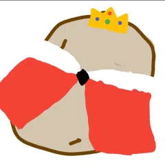
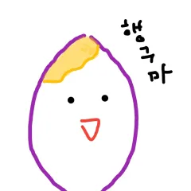

-

대왕 감자
2021-04-01 황지선감자들의 대장님입니다.
-
고양 감자
2021-11-01 최보영고양이가 감자가 되어버렸어요
-

달콤한 감자
2021-11-25 안예지감자들 중 가장 스윗한 감자입니다
감자들의 대장님입니다.
고양이가 감자가 되어버렸어요
감자들 중 가장 스윗한 감자입니다
저희 스터디는 생활스터디의 성격을 띄고 있으며 주 1회 감자품평회 시간을 가져 서로의 성과를 공유합니다
1. 디코 들어와 있을때는 무조건 화면공유!!!!!
2. 꼭 들어와 있어야하는 시간 : 10-12시, 3-5시, 9-11시, 11-1시 中 한 타임은 필참! (출석부에 작성!)
3. 빠지는 날은 전날 새벽 5시까지 게시판에 적기!
4. 열품타 혹은 태그룸 기준 주간 30시간 이하 페널티 + 1 (월요일 새벽 6시~ 다음주 월요일 새벽 2시)
5. 기회(페널티) 3번 넘기면 당신은 더 이상 감자도 못 됩니다. 나가주세요.
6. 수요일 오후 2시 감자품평회 갖습니다~ (월수/수금도 고려중)
7. 스터디 내 연애 금지
1. 이 주의 감자 시상식 → 페널티 차감(킵가능)과 명예의 혜택
2. 이 주의 감자가 되면? 호칭을 바꿀 수 있습니다! ex. (POTW)김뫄뫄
1. 벌금은 다같이 N분의 1
2. 정산은 마지막 주 월요일에!
3. 무단결석은 2000원 벌금입니다.